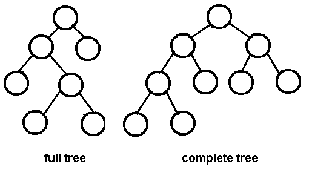
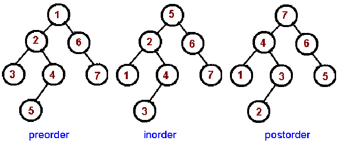
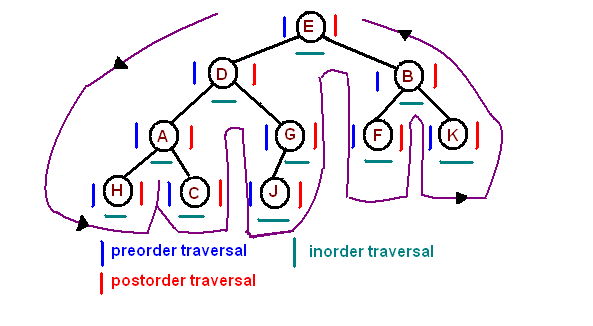
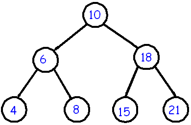
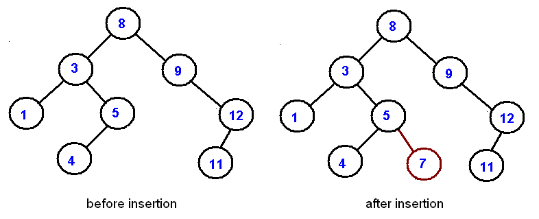
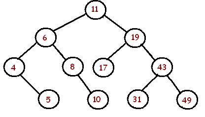
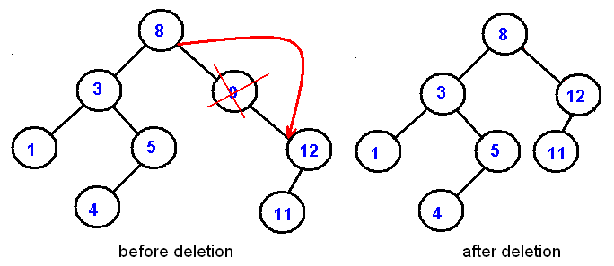
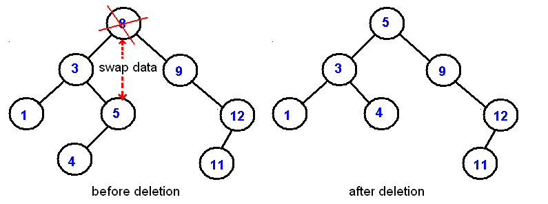
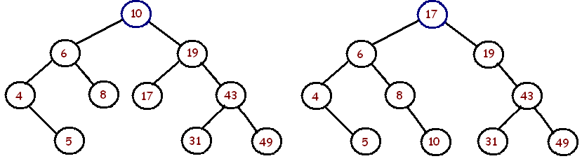
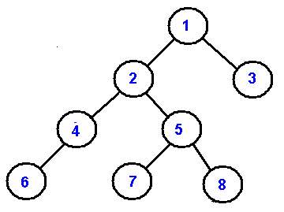

We extend the concept of linked data structures to structure containing
nodes with more than one self-referenced field. A binary tree is made of nodes, where each node contains a "left" reference, a "right" reference, and a data element. The topmost node in the tree is called the root.
Every node (excluding a root) in a tree is connected by a directed edge from exactly one other node. This node is called a parent. On the other hand, each node can be connected to arbitrary number of nodes, called children. Nodes with no children are called leaves, or external nodes. Nodes which are not leaves are called internal nodes. Nodes with the same parent are called siblings.
More tree terminology:
The depth of a node is the number of edges from the root to the
node.
The height of a node is the number of edges from the node to the deepest leaf.
The height of a tree is a height of the root.
A full binary tree.is a binary tree in which each node has exactly zero or two children.
A complete binary tree is a binary tree, which is completely
filled, with the possible exception of the bottom level, which is filled from left to
right.

A complete binary tree is very special tree, it provides the best possible ratio between the number of nodes and the height. The height h of a complete binary tree with N nodes is at most O(log N). We can easily prove this by counting nodes on each level, starting with the root, assuming that each level has the maximum number of nodes:
n = 1 + 2 + 4 + ... + 2h-1 + 2h = 2h+1 - 1
Solving this with respect to h, we obtain
h = O(log n)
where the big-O notation hides some superfluous details.
Advantages of trees
Trees are so useful and frequently used, because they have some very serious advantages:
Trees reflect structural relationships in the data
Trees are used to represent hierarchies
Trees provide an efficient insertion and searching
Trees are very flexible data, allowing to move subtrees around with minumum effort
Traversals
A traversal is a process that visits all the nodes in the tree. Since a tree is a nonlinear data structure, there is no unique traversal. We will consider several traversal algorithms with we group in the following two kinds
depth-first traversal
breadth-first traversal
There are three different types of depth-first traversals, :
PreOrder traversal - visit the parent first and then left and right children;
InOrder traversal - visit the left child, then the parent and the right child;
PostOrder traversal - visit left child, then the right child and then the parent;
There is only one kind of breadth-first traversal--the level order traversal. This traversal visits nodes by levels from top to bottom and from left to right.
As an example consider the following tree and its four traversals:
In the next picture we demonstarte the order of node visitation. Number 1 denote the first node in a particular traversal and 7 denote the last node.

These common traversals can be represented as a single algorithm by assuming that we visit each node three times. An Euler tour is a walk around the binary tree where each edge is treated as a wall, which you cannot cross. In this walk each node will be visited either on the left, or under the below, or on the right. The Euler tour in which we visit nodes on the left produces a preorder traversal. When we visit nodes from the below, we get an inorder traversal. And when we visit nodes on the right, we get a postorder
traversal.

Binary Search Trees
We consider a particular kind of a binary tree called a Binary
Search Tree (BST). The basic idea behind this data structure is to have such a storing repository that provides the efficient way of data sorting, searching and retriving.

A BST is a binary tree where nodes are ordered in the following way:
each node contains one key (also known as data)
the keys in the left subtree are less then the key in its
parent node, in short L < P;
the keys in the right subtree are greater the key in its parent
node, in short P < R;
duplicate keys are not allowed.
In the following tree all nodes in the left subtree of 10 have keys < 10
while all nodes in the right subtree > 10. Because both the left and right subtrees of a BST are again search trees; the above definition is recursively applied to all internal nodes:
Implementation
We implement a binary search tree using a private inner class BSTNode. In order to
support the binary search tree property, we require that data
stored in each node is Comparable:
public class BST <AnyType extends Comparable<AnyType>>
{
private Node<AnyType> root;
private class Node<AnyType>
{
private AnyType data;
private Node<AnyType> left, right;
public Node(AnyType data)
{
left = right = null;
this.data = data;
}
}
...
}
Insertion
The insertion procedure is quite similar to searching. We start at the root and
recursively go down the tree searching for a location in a BST to insert a new node.
If the element to be inserted is already in the tree, we are done (we do not insert duplicates). The new node will always replace a NULL reference.

Exercise. Given a sequence of numbers:
11, 6, 8, 19, 4, 10, 5, 17, 43, 49, 31
Draw a binary search tree by inserting the above numbers from left to right.

Searching
Searching in a BST always starts at the root. We compare a data stored at the root with
the key we are searching for (let us call it as toSearch). If the node
does not contain the key we proceed either to the left or right child depending upon
comparison. If the result of comparison is negative we go to the left child,
otherwise - to the right child. The recursive structure of a BST yields a recursive
algorithm.
Searching in a BST has O(h) worst-case runtime complexity, where h is the height of the tree. Since s binary search tree with n nodes has a minimum of O(log n) levels, it takes at least O(log n) comparisons to find a particular node.
Unfortunately, a binary serch tree can degenerate to a linked list, reducing the search time to O(n).
Deletion
Deletion is somewhat more tricky than insertion. There are several cases to consider. A node to be deleted (let us call it as toDelete)
is not in a tree;
is a leaf;
has only one child;
has two children.
If toDelete is not in the tree, there is nothing to delete. If toDelete node has only one child the procedure of deletion is identical to deleting a node from a linked list - we just bypass that node being deleted

Deletion of an internal node with two children is less straightforward. If we delete such a node, we split a tree into two subtrees and therefore, some children of the internal node won't be accessible after deletion. In the picture below we delete 8:

Deletion starategy is the following: replace the node being deleted with
the largest node in the left subtree and then delete that largest node. By symmetry, the node being deleted can be swapped with the smallest node is the right subtree.
Draw a binary search tree by inserting the above numbers from left to right and
then show the two trees that can be the result after the removal of 11.

Non-Recursive Traversals
Depth-first traversals can be easily implemented recursively.A non-recursive implementation is a bit more difficult. In this section we implement
a pre-order traversal as a tree iterator
public Iterator<AnyType> iterator()
{
return new PreOrderIterator();
}
where the PreOrderIterator class is implemented as an inner private class of the BST class
private class PreOrderIterator implements Iterator<AnyType>
{
...
}
The main difficulty is with next() method, which requires the implicit recursive
stack implemented explicitly. We will be using Java's Stack. The algorithm starts with the root and push
it on a stack. When a user calls for the next() method, we check if the top element has
a left child. If it has a left child, we push that child on a stack and return a parent
node. If there is no a left child, we check for a right child. If it has a right child, we
push that child on a stack and return a parent node. If there is no right child, we
move back up the tree (by popping up elements from a stack) until we find a
node with a right child. Here is the next() implementation
The following example.shows the output and the state of the stack during each call to next(). Note, the algorithm works on any binary trees, not necessarily binary search trees..

Output
1
2
4
6
5
7
8
3
Stack
1
2 1
4 2 1
6 4 2 1
5 1
7 5 1
8 1
3
A non-recursive preorder traversal can be eloquently implemented in just three
lines of code. If you understand next()'s implementation above, it should be no
problem to grasp this one:
public AnyType next()
{
if (stk.isEmpty()) throw new java.util.NoSuchElementException();
Node cur = stk.pop();
if(cur.right != null) stk.push(cur.right);
if(cur.left != null) stk.push(cur.left);
return cur.data;
}
Note, we push the right child before the left child.
Level Order Traversal
Level order traversal processes the nodes level by level. It first processes the
root, and then its children, then its grandchildren, and so on. Unlike the other
traversal methods, a recursive version does not exist.
A traversal algorithm is similar to the non-recursive preorder traversal algorithm.
The only difference is that a stack is replaced with a FIFO queue.